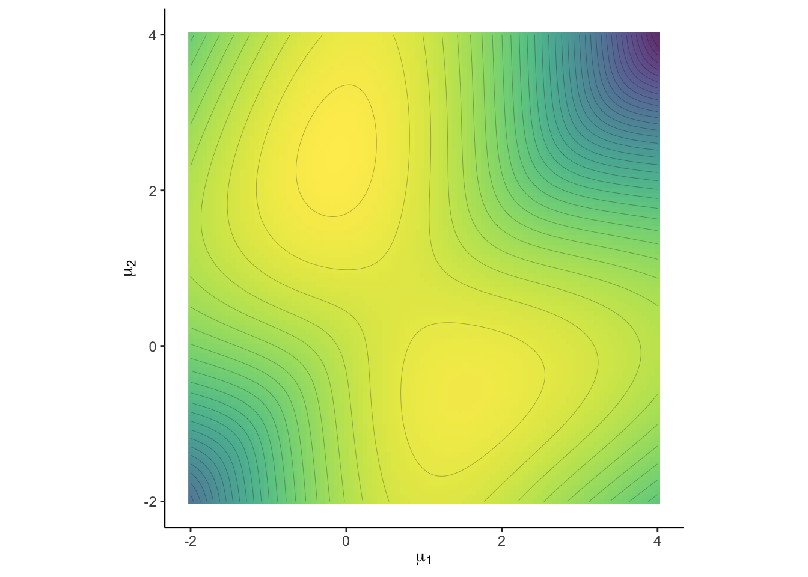
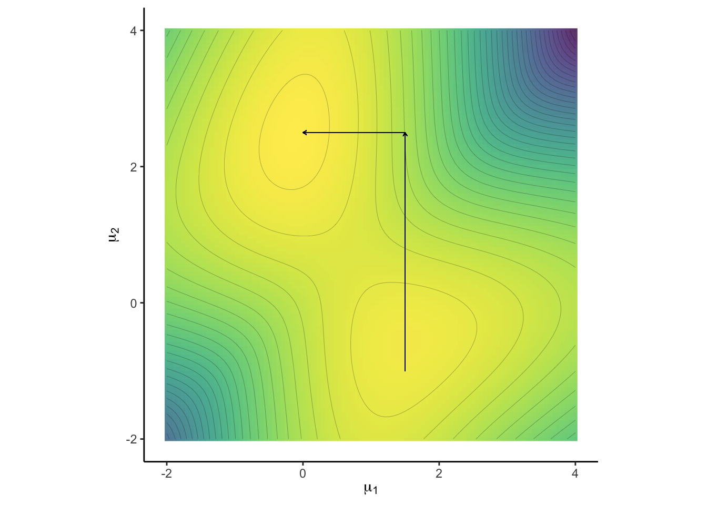
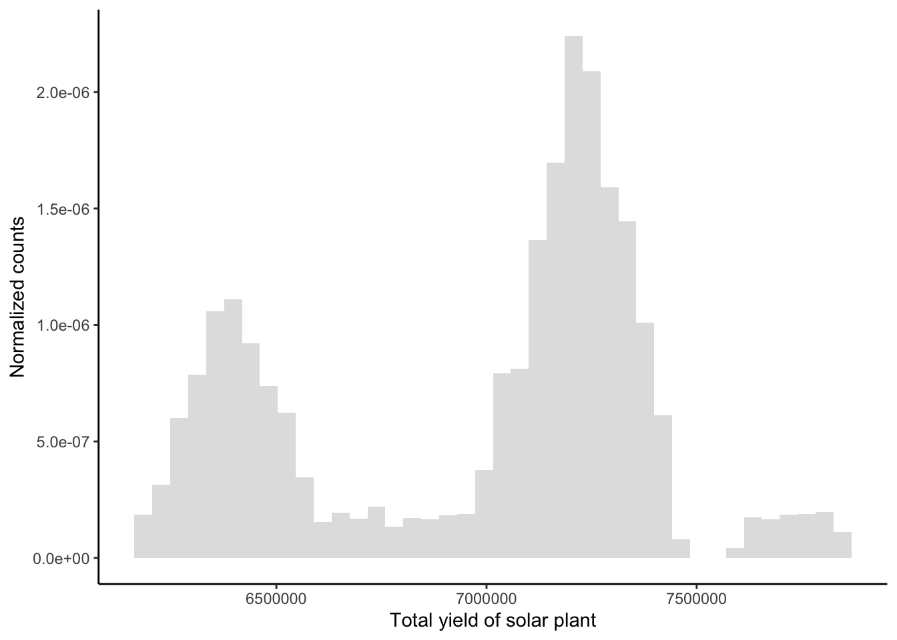
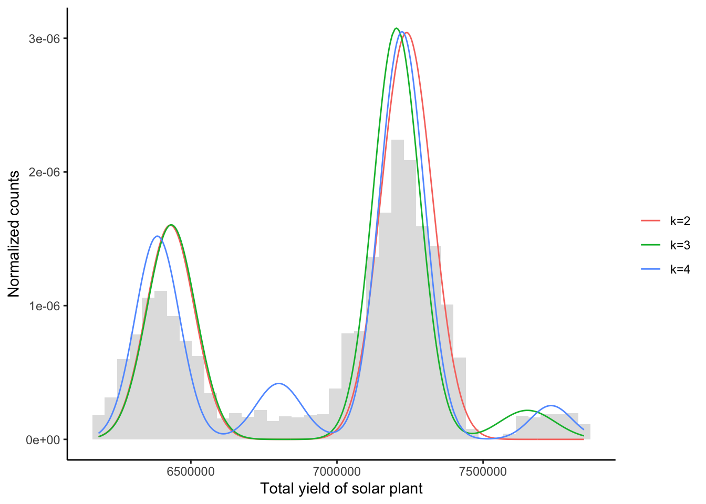

This document gives an example on the implementation of a Gibbs sampler in a mixture model using completion. The data has been gathered from Ani Kannal from Kaggle. It is merely a calculation example and not intended for interpretation. A detailed derivation and discussion of the problem is given in Robert & Casella (2004): Monte Carlo Statistical Methods.
Consider a sample from a mixture of distributions, \[\begin{equation*} X_1, \dots, X_n \overset{iid.}{\sim} \sum_{j=1}^k p_j f(\;\cdot\;|\eta_j). \end{equation*}\] As fundamental problem for such distributions, their joint density is given by \[\begin{equation*} L(p, \eta| x)= \prod_{i=1}^n \sum_{j=1}^k p_j f(x_i|\eta_j), \end{equation*}\] and contains \(k^n\) terms if expanded. Standard maximisation techniques often fail to find the global maximum because of the multimodality of the joint likelihood.
This issue is treated by a missing data model. Such involve the introduction of a latent indicator variable with \[\begin{equation*} \mathbf{Z} \sim \mathcal{M}_k(1; p), \qquad X_i|Z_i=z_i \sim f(\;\cdot\;|\eta_{z_i}). \end{equation*}\] This ansatz is called demarginalisation or completion. Instead of treating the marginal density \(L(p, \eta| x)\), the density \[\begin{equation*} L(p, \eta| x, z) \propto \prod_{i=1}^n p_{z_i}f(x_i|\eta_{z_i}) \end{equation*}\] is considered, eliminating the mixture structure (cf. the connection to the slice sampler).
To illustrate the problem in the case \(k=2\), with \(f(\cdot|\eta_i) \equiv \mathcal{N}(\mu_i, 1)\), let us first generate a sample according to the parameters:
# parameters
k <- 2
n <- 100
## true data
set.seed(123)
mu0 <- c(0, 2.5)
p0 <- c(0.7, 0.3)Now we can generate the sample x without using k. Note that the command sequence mapply(function(..) sum(runif(1) > cumsum(p0)) + 1, 1:n) draws n realizations from the Multinomial distribution with parameter p0.
require('dplyr')
z <- mapply(function(..) sum(runif(1) > cumsum(p0)) + 1, 1:n)
x <- rnorm(n, mu0[z])The multimodal log-likelihood \(L(\eta| x)\) is thus given by
loglik <- function(mu1, mu2) sum(log(p0[1] * dnorm(x, mu1) + p0[2] * dnorm(x, mu2)))
loglik <- Vectorize(loglik, vectorize.args = "mu1")This log-likelihood is two-dimensional, so it can be plotted on \(\mu_0\in\mathbb{R}^2\):
grid <- seq(4, -2, l = 100) #grid
LL.Surface <- matrix(NA, ncol = 100, nrow = 100) #initialize surface
colnames(LL.Surface) <- rownames(LL.Surface) <- grid #set names to use melt
for (i in 1:100) LL.Surface[i,] <- loglik(grid, grid[i]) #get surface values
require('latex2exp')
require('tidyverse')
plt1 <- ggplot(reshape::melt(LL.Surface)) + coord_fixed() + theme_classic() +
labs(y = TeX('$\\mu_2$'), x = TeX('$\\mu_1$')) +
viridis::scale_fill_viridis() +
geom_raster(aes(X2, X1, fill = value), alpha = 0.8, show.legend = FALSE) +
geom_contour(aes(X2, X1, z = value), colour = 'black', size = 0.05, bins = 40)
plt1 
This log-likelihood (for known \(p\)) has two modes, one at \(\mu_0 = (0, 2.5)^t\) at which the data was generated, but another one at \((1.5, -1)\). It is now clear why a standard maximization is vulnerable to find only the latter local maximum and fails to detect the higher mode \(\mu_0\).
The positions diagonal to each other of the two modes above is particularly problematic. A Markov chain exploring the support parallel to the axes may fail to detect the multimodality of the likelihood. If the current state of the chain is in any of the modes, it cannot directly continue to the other mode, without first stepping into a low-probablity region.
plt1 + geom_segment(aes(x = 1.5 , y = -1, xend = 1.5, yend = 2.5),
size = 0.2, arrow = arrow(length = unit(0.1, "cm"))) +
geom_segment(aes(x = 1.5, y = 2.5, xend = 0, yend = 2.5),
size = 0.2, arrow = arrow(length = unit(0.1, "cm"))) 
In order to pass from one mode to another, the chain has to move to a low-probability region of the density. This can take too long to detect pseudo convergence.
Of course, the danger of failed convergence is not avoided using the concept of demarginalization. It seems natural that if a Markov chain is trapped in the lower mode, graphical tools do not help to diagnose failes convergence. Concepts like computing Riemann integrals are also not suitable for high dimensional problems like these. Instead it is advisable to initialize the Markov chain at different locations within the state space and interpret the convergence behavior.
Let us return to the concept of demargonalization. While the likelihood \(L(p, \eta| x, z)\) obliterated the use of \(k\) and thus simplified the problem, we can further ease computational burden, by choosing conjugate prior distributions. For \(f(\;\cdot\;|\eta)\) belonging to the exponential family with \[\begin{equation*} f(x|\eta) = \exp\{ \eta^tT(x) - \kappa(\eta)\}, \end{equation*}\] the associated conjugate prior for \(\eta\) is given by \[\begin{equation*} \pi(\eta|\alpha, n_0) \propto \exp[ n_0\{\eta^t\alpha - \kappa(\eta)\}], \qquad n_0\in\mathbb{R}, \alpha\in\mathcal{X}. \end{equation*}\] Eventually, one can derive the posterior to be \[\begin{equation*} \pi(\eta|x, \alpha, n_0) \propto \exp\{ \eta^t(n_0\alpha + n\bar{T}) - (n_0+n)\kappa(\eta)\}. \end{equation*}\] An example is given by the conjugate prior for the multinomial distribution \(\mathcal{M}_k(1,p)\), namely the Dirichlet distribution, that is \[\begin{equation*} p \sim \mathcal{D}_k(\gamma),\qquad \gamma \in\mathbb{R}^k_{>0}. \end{equation*}\] The corresponding parameters of the posterior distributions can be determined, since they all are from the exponential family. This leads to a Gibbs algorithm in which \(Z\), \(\eta\) and \(p\) can be easily simulated as the corresponding full conditionals are available: For the latter two as they are chosen to be from the exponential family, and hence with known posteriors. The former reduces to a discrete random variable with full conditional is given by \[\begin{equation*} P(Z_i=j| x, p , \eta ) = \frac{p_jf(x_i|\eta_j)}{\sum_{j=1}^k p_jf(x_i|\eta_j)}. \end{equation*}\] One can simulate \(Z_i\in\{1, \dots, k\}\) by
pvec <- p * dnorm(x[i], mu) / sum(p * dnorm(x[i], mu))
Z[i] <- sum(runif(1) > cumsum(pvec)) + 1We provide an example of such an algorithm. Consider the data set Plant_1_Generation_Data.csv on energy production of a solar plant in India. We are interested in the total yield of the plant, given by variable TOTAL_YIELD, which we assume to be distributed by a mixture of Gaussians:
# read data
df <- read.csv(file = "Plant_1_Generation_Data.csv")
n <- length(df$TOTAL_YIELD)
df <- data.frame(x = seq(min(df$TOTAL_YIELD), max(df$TOTAL_YIELD), l = n),
y = df$TOTAL_YIELD / n ) # normalize for use later
# plot data
require("tidyverse")
plt = ggplot(df) + theme_classic() + geom_histogram(aes(x = y * n, y = ..density..), bins = 40, alpha = 0.2) +
labs( y = 'Normalized counts', x = 'Total yield of solar plant')
plt
The data can be modelled to stem from a mixture of two or three Gaussians. We consider the hierarchy \[\begin{align*} \mu_j | \sigma_j^2, \delta_j, \lambda_j &\sim \mathcal{N}\left( \delta_j, \frac{\lambda_j}{\sigma_j^2} \right), \qquad \delta_j\in \mathbb{R}, \lambda_j>0;\\ \sigma_j^2 | \tau_j, \beta_j &\sim \mathcal{IG}(\tau_j, \beta_j), \qquad\qquad \tau_j, \beta_j >0. \end{align*}\]
First, one has to verify that the joint prior \(\pi(\mu_j, \sigma_j^2)\) is indeed in the exponential family. After some manipulations, one can find that this is the case and \[\begin{equation*} \alpha_j = \left(-\frac{\lambda_j\delta_j^2}{2}-\beta_j, \lambda_j \delta_j , - \frac{\lambda_j}{2} , \tau_j + \frac{3}{2} \right)^t, \qquad \eta_j = \left( \frac{1}{\sigma_j^2}, \frac{\mu_j}{\sigma_j^2}, \frac{\mu_j^2}{\sigma_j^2}, \ln \sigma_j^{-2} \right)^t. \end{equation*}\] Consequently, the parameters of the posterior - indicated by the prime subscript - can be derived: \[\begin{align*} \tau_j' &= \tau_j + \frac{n_j}{2},\\ \lambda_j' &= \lambda_j + {n_j},\\ \delta_j' &= \frac{\lambda_j\delta_j + n_j\bar x_j}{\lambda_j + {n_j}},\\ \beta_j' &= \beta_j + \frac{1}{2} \sum_{i=1}^{n_j} (x_i - \bar x_j )^2 + \frac{1}{2} \frac{\lambda_j n_j}{\lambda_j + n_j} \left( \delta_j - \bar x_j \right)^2. \end{align*}\] Eventually, the posterior densities are given as \[\begin{align*} \mu_j | x_j, \sigma_j^2, \delta_j, \lambda_j &\sim \mathcal{N}\left( \delta_j', \frac{\lambda_j' }{\sigma_j^2} \right),\\ \sigma_j^2 | x_j, \tau_j, \beta_j, \lambda_j, \delta_j &\sim \mathcal{IG}(\tau_j', \beta_j'). \end{align*}\]
Now, the Normal-Inverse-Gibbs algorithm can be implemented. It takes the sample x and k as arguments as well as the length of the chain M.
Initial values are obtained by binning the data in k bins and obtaining naive estimates which are used as initial values.
The hyperparameter \(\gamma\) is set to be equal to \(1/k\) in each component and lamdba = 10 to ensure a sufficiently spread out prior for mu.
MPGS.NIG <- function(x, k, M = 5e2) {
# load packages
require('MCMCpack') #for rdirichlet
# parameters
n <- length(x)
# initial values - bin and take adjusted probs, mean and sd
bin <- seq(min(x) - 1, max(x) + 1, l = k + 1)
p <- mapply(function(k) mean(x > bin[k] & x <= bin[k + 1]), 1:k)
mu <- mapply(function(k) mean(x[x > bin[k] & x <= bin[k + 1]]), 1:k)
sig <- mapply(function(k) sd(x[x > bin[k] & x <= bin[k + 1]]), 1:k)
# hyperparams
gamma <- rep(1/k, k)
delta <- mu
lambda <- 10
alpha <- sig
beta <- rep(1,k)
# initialize Markov chains
P <- matrix(NA, M, k)
MU <- matrix(NA, M, k)
SIG <- matrix(NA, M, k)
sdxj <- c()
# Gibbs sampler
for (m in 1:M) {
# Step 1, draw Z
Z <- mapply(function(i){
pvec = p * dnorm(x[i], mu, sig) / sum(p * dnorm(x[i], mu, sig)) #discrete probs for Z
Z <- sum(runif(1) > cumsum(pvec)) + 1 #draw from P(Z=j), j = 1, ... , k)
}, 1:n)
# calculate values necessary for the remaining posteriors
nj <- table(factor(Z, 1:k))
xj <- c(); for (i in 1:k) xj[i] = sum(x[Z == i])
# only calc sd if a at least one obs is present - otherwise an error will occur
for (i in 1:k) if (!is.na(sd(x[Z == i]))) sdxj[i] = (nj[i] - 1) * sd(x[Z == i])
# Step 2 - compute the remaining posteriors
p <- rdirichlet(1, gamma + nj) #redraw p
alpha.n <- alpha + nj / 2
beta.n <- beta + sdxj / 2 + nj * lambda / (lambda + nj) * (xj/nj - delta)**2 / 2
delta.n <- (lambda * delta + xj) / (nj + lambda)
lambda.n <- lambda + nj
# draw from the posteriors
sig <- rgamma(k, alpha.n, beta.n) ** -.5
mu <- rnorm(k, delta.n, sig / lambda.n**.5 )
P[m,] <- p
MU[m,] <- mu
SIG[m,] <- sig #this is the variance, not standard deviation
}
# return the Bayes estimates under squared error loss
return(mapply('colMeans', list(p = P, mu = MU, var = SIG)))
}The task is computationally challenging, we thus run the algorithm on a subsample only.
df <- df[sample(1:n, 1000) , ]
MC.2 <- MPGS.NIG(df$y, 2) #two modes
MC.3 <- MPGS.NIG(df$y, 3) #three modes
MC.4 <- MPGS.NIG(df$y, 4) #three modesWe can verify that the resulting Markov chains indeed seem to thoroughly sweep over the state space.
Below, we compute the Bayes estimates and plot the fitted models on the histogram. fit is the respective Gaussian fit, by applying the Bayes estimates to the model equation.
fit <- function(param) rowSums(apply(param, 1, function(a) a[1] * dnorm( df$x , n * a[2] , n * a[3] ** .5)))
df <- data.frame(x = df$x, y2 = fit(MC.2), y3 = fit(MC.3), y4 = fit(MC.4))
df <- reshape::melt(df, id = "x")
plt + geom_line(data = df, aes(x, value, color = variable)) +
scale_color_discrete(name = "", labels = c("k=2", "k=3", "k=4"))
While the MCMC Bayes estimates produce good fits in the model framework, the tail behavior indicates that a Gaussian assumption is unjustified in the first place.